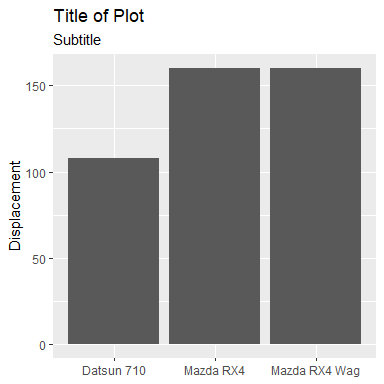
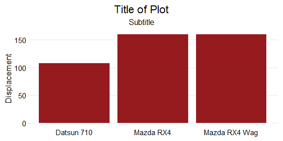

The goal of tcdsb is to provide report templates and ggplot themes that align with the visual identity of the Toronto Catholic District School Board (TCDSB).
Installation
You can install the development version of tcdsb from GitHub with:
# install.packages("devtools")
devtools::install_github("grousell/tcdsb")Plot Example
Here is a basic plot:
library(tidyverse)
library(tcdsb)
mtcars |>
head(3) |>
rownames_to_column("car") |>
ggplot(aes(x = car, y = disp)) +
geom_col() +
labs(title = "Title of Plot",
subtitle = "Subtitle",
x = NULL,
y = "Displacement") 
The tcdsb_colours_fonts function loads the appropriate fonts and HEX colours.

By adding tcdsb_ggplot_theme at the end of the code to build the plot, a consistent theme is applied.
mtcars |>
head(3) |>
rownames_to_column("car") |>
ggplot(aes(x = car, y = disp)) +
geom_col() +
labs(title = "Title of Plot",
subtitle = "Subtitle",
x = NULL,
y = "Displacement") +
tcdsb::tcdsb_ggplot_theme()
Custom colours can be added to the chart using tcdsb_board_color.
mtcars |>
head(3) |>
rownames_to_column("car") |>
ggplot(aes(x = car, y = disp)) +
geom_col(fill = tcdsb_board_color) +
labs(title = "Title of Plot",
subtitle = "Subtitle",
x = NULL,
y = "Displacement") +
tcdsb::tcdsb_ggplot_theme()